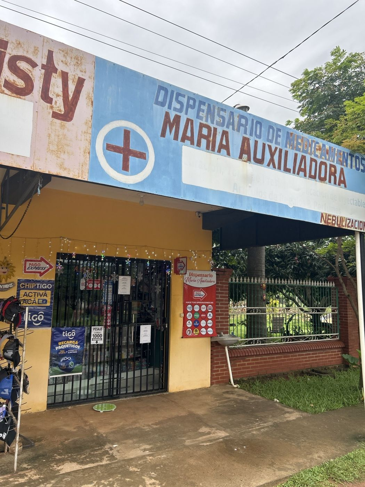
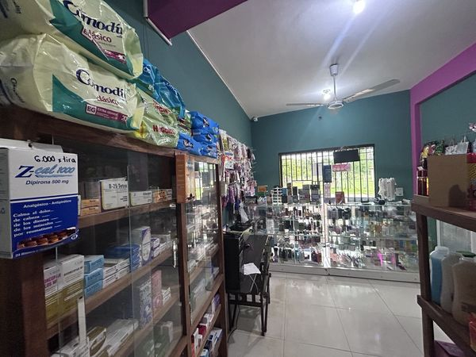
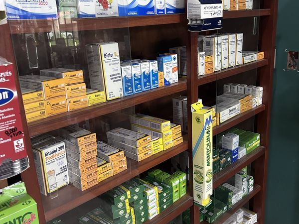

Misión
Brindar productos y asesoramiento farmacéutico de calidad, con atención cercana, para mejorar el bienestar de nuestra comunidad.
María Auxiliadora es un negocio familiar de Tobatí. Nació con una idea simple: que cada persona del barrio tenga un lugar de confianza a la vuelta de la esquina, con un trato humano y responsable.
Desde 2021 trabajamos con el mismo compromiso: escucharte y ayudarte a cuidarte mejor.

Brindar productos y asesoramiento farmacéutico de calidad, con atención cercana, para mejorar el bienestar de nuestra comunidad.
Ser la farmacia de referencia de la zona por la confianza, la calidad del servicio y el compromiso con la salud de las familias.
Responsabilidad, honestidad, empatía, respeto y compromiso con la salud de cada cliente.
Abrimos las puertas de la farmacia en Tobatí.
Lanzamos nuestro sitio web.
Somos un negocio familiar: quien te atiende es quien responde por el local. Detrás del mostrador está el propietario, que además es el farmacéutico.
Propietario y farmacéutico


